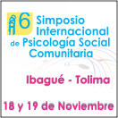
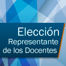
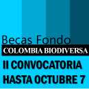

Simposio Internacional de Psicología Social Comunitaria
Inscripciones abiertas con descuento para la sexta versión del evento.

Están abiertas las elecciones para el Representante de los Docentes ante el Consejo Académico de la UNAD
Novedades Saber Pro - 20 de noviembre de 2016
Consulta las instrucciones para realizar el registro en el aplicativo Prisma. Plazo al 15 de agosto de 2016

Convocatoria
para estudiantes de pregrado y maestría de diferentes programas académicos, que tengan aprobados sus temas de tesis de grado